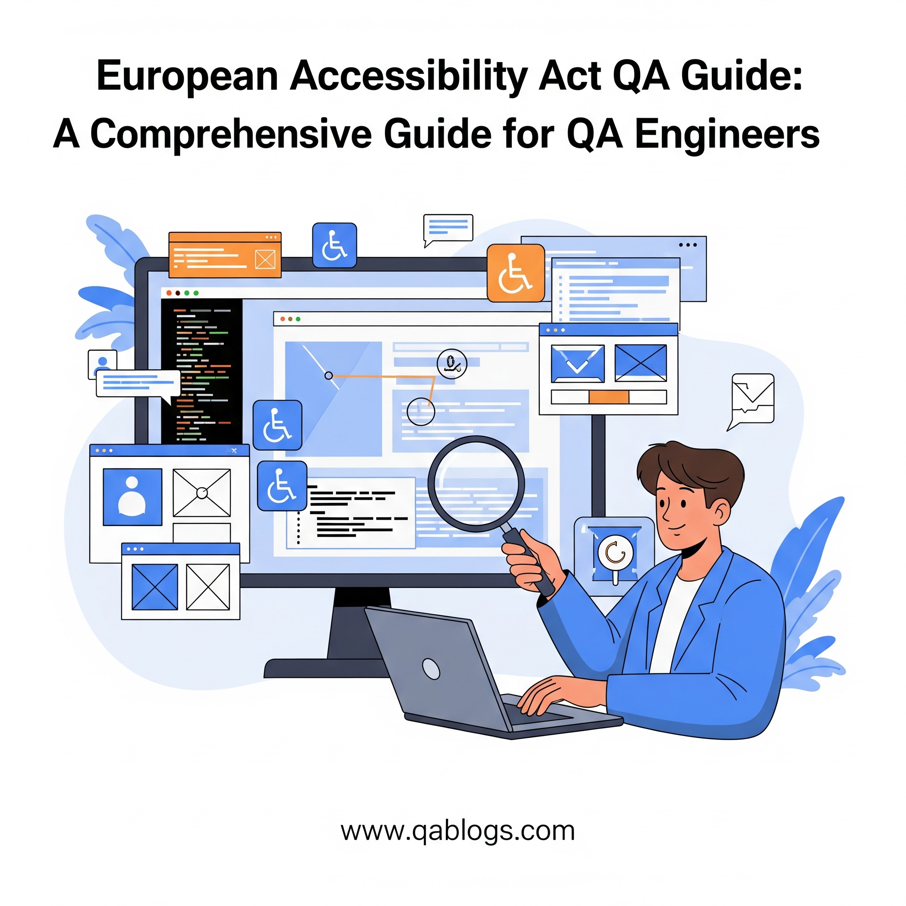

Navigating the European Accessibility Act: A QA Guide for 2025 Compliance

Key Takeaways
- Understand EAA requirements and compliance deadlines
- Learn practical accessibility testing strategies
- Discover essential tools for EAA compliance
- Master WCAG 2.2 and EN 301 549 standards
As the digital landscape evolves in 2025, ensuring accessibility for all users is no longer just a best practice—it's a legal requirement in the European Union (EU). The European Accessibility Act (EAA), fully enforceable as of June 28, 2025, mandates that a wide range of digital products and services be accessible to people with disabilities. For QA teams, this presents both a challenge and an opportunity to lead the charge in compliance, inclusivity, and quality. This blog on QA Blogs provides a comprehensive guide for QA professionals to navigate the EAA, understand its requirements, and implement effective testing strategies to ensure compliance—all while optimizing for SEO to reach QA and accessibility-focused audiences.
What is the European Accessibility Act (EAA)?
The European Accessibility Act (EAA), adopted in 2019 as Directive 2019/882, aims to harmonize accessibility standards across EU member states, ensuring that people with disabilities can access a broad range of products and services. By removing divergent national rules, the EAA fosters cross-border trade and inclusivity, benefiting both businesses and the 100+ million Europeans with disabilities, a number expected to grow as the population ages.
The EAA officially came into effect on June 28, 2025, requiring compliance for newly marketed digital products and services, such as websites, mobile apps, e-commerce platforms, ATMs, and transport services. Existing products and services have until June 2030 to comply, but QA teams should act now to avoid last-minute scrambles and ensure a competitive edge.
Key Scope of the EAA
- Digital Products and Services: Websites, mobile apps, e-commerce platforms, consumer electronics (e.g., smartphones, TVs), and e-readers.
- Industries Affected: Banking, telecommunications, transport, e-commerce, and more.
- Exemptions: Microenterprises (fewer than 10 employees or €2M turnover) are exempt, though accessibility remains a brand advantage.
Why the EAA Matters for QA Teams in 2025
The EAA isn't just a compliance checkbox—it's a transformative shift that impacts QA processes, testing strategies, and user experience. Here's why QA teams should prioritize EAA compliance in 2025:
1. Legal and Financial Risks
Non-compliance with the EAA can lead to severe penalties, varying by EU member state:
- Fines: Up to €500,000 in Germany or €250,000 in France for serious violations.
- Product Bans: Non-compliant products or services may be withdrawn from the market.
- Reputational Damage: Failing to meet accessibility standards can harm your brand's reputation, especially as consumers increasingly value inclusivity.
2. Expanded Market Reach
With over 100 million Europeans living with disabilities, accessible digital experiences tap into an underserved market. A 2025 Eurostat report notes that one in four Europeans over 16 has a disability, representing significant purchasing power. Accessibility also benefits older adults and those with situational limitations (e.g., using a phone in bright light), broadening your user base.
3. Improved SEO and User Experience
Accessible design aligns with SEO best practices. Well-structured, accessible content (e.g., proper semantic HTML, alt text) improves search engine rankings, as search engines like Google reward inclusivity. Additionally, accessibility features like keyboard navigation and clear content structure enhance usability for all users, reducing bounce rates and increasing customer satisfaction.
4. Alignment with QA Goals
QA teams are already focused on ensuring quality and usability—EAA compliance naturally extends this mission by prioritizing inclusivity. By embedding accessibility testing early, QA can prevent costly retrofits and deliver products that work for everyone.
EAA Accessibility Requirements: What QA Teams Need to Know
The EAA aligns with international standards like the Web Content Accessibility Guidelines (WCAG) 2.2 (Level AA) and EN 301 549, the EU's harmonized digital accessibility standard. These standards are based on the POUR principles (Perceivable, Operable, Understandable, Robust), which QA teams must test for:
- Perceivable: Information must be presentable in ways users can perceive (e.g., alt text for images, captions for videos).
- Operable: Navigation and UI elements must be usable without barriers (e.g., keyboard navigation, no flashing content that triggers seizures).
- Understandable: Content must be clear and predictable (e.g., consistent navigation, error messages that guide users).
- Robust: Code must be compatible with assistive technologies (e.g., screen readers, voice recognition software).
How QA Teams Can Ensure EAA Compliance: A Step-by-Step Guide
QA teams play a pivotal role in achieving EAA compliance by embedding accessibility testing throughout the SDLC. Here's how to get started in 2025:
1. Conduct an Accessibility Audit
Begin by assessing your current digital assets (websites, apps, etc.) to identify gaps in EAA compliance.
- What to Do: Use automated tools to scan for issues like missing alt text, poor color contrast, or keyboard navigation failures.
- Tools to Try: Axe by Deque, WAVE, or Siteimprove for automated testing.
- Manual Testing: Test with assistive technologies (e.g., screen readers like JAWS or NVDA) to catch issues automation might miss.
2. Embed Accessibility Testing Early (Shift-Left Approach)
Integrate accessibility testing from the requirements phase to catch issues before they escalate.
- How to Do It: Collaborate with developers and designers to define accessibility requirements in user stories.
- Example Test Case: Input: Navigate a login form using only a keyboard; Expected Output: All form fields are focusable and operable without a mouse.
- Tool: Use Jira to track accessibility requirements alongside functional ones.
3. Test Against WCAG 2.2 and EN 301 549 Standards
Create test cases that validate the POUR principles and EAA-specific requirements.
- Perceivable Test Case: Input: Image on a product page; Expected Output: Image has descriptive alt text readable by a screen reader.
- Operable Test Case: Input: Navigate a checkout flow using a keyboard; Expected Output: All buttons and links are accessible without a mouse.
- Understandable Test Case: Input: Submit a form with an error; Expected Output: Error message is clear and suggests corrective action.
- Robust Test Case: Input: Use a screen reader on a webpage; Expected Output: All content is correctly interpreted by the screen reader.
- Tool: Use TestRail to manage and document accessibility test cases.
4. Automate Accessibility Testing in CI/CD Pipelines
Automate accessibility checks to ensure continuous compliance throughout development.
- Tools to Try: Integrate Axe into Jenkins or GitHub Actions to run accessibility scans with every code commit.
- Benefit: Catches issues early, reducing manual testing effort and ensuring compliance in Agile environments.
5. Perform Manual Testing with Assistive Technologies
Automated tools catch only about 30-40% of accessibility issues—manual testing is essential for full compliance.
- What to Do: Test with real users who rely on assistive technologies, such as screen readers, magnifiers, or voice recognition software.
- Example: Use NVDA to navigate an e-commerce site, ensuring all product descriptions and buttons are accessible.
- Tip: Partner with accessibility advocacy groups to involve users with disabilities in testing.
6. Create an Accessibility Statement
The EAA requires businesses to publish an accessibility statement outlining their compliance efforts.
- What to Include:
- Commitment to accessibility.
- Known limitations and timelines for improvement.
- Contact options for users to report accessibility issues.
- Tool: Use the W3C Web Accessibility Initiative (WAI) accessibility statement generator for a compliant template.
7. Train Your Team on Accessibility Best Practices
Equip your QA team with the skills to test for accessibility effectively.
- What to Learn: WCAG 2.2 guidelines, assistive technology usage, and accessibility testing techniques.
- Resources: Take online courses like "Introduction to Web Accessibility" by W3C, or join communities like Reddit's r/QualityAssurance for peer insights.
- Tip: Appoint an accessibility champion within your team to lead compliance efforts.
8. Monitor and Iterate Post-Launch
EAA compliance is an ongoing process—monitor your digital assets regularly to maintain accessibility.
- What to Do: Set up monthly reviews to address user feedback and evolving regulations.
- Tool: Use Siteimprove to track accessibility issues and export reports for compliance audits.
- Tip: Prioritize updates based on user impact, not just ease of implementation.
Real-World Impact of EAA Compliance
EAA compliance is already reshaping industries in 2025:
- E-commerce: An online retailer revamped its checkout flow to meet WCAG 2.2, reducing cart abandonment by 15% and tapping into a broader customer base.
- Banking: A European bank updated its mobile app to support screen readers, ensuring compliance with PCI DSS and the EAA while improving user satisfaction.
- Transport Services: A ticketing platform added accessible features like audio descriptions, meeting EAA requirements and increasing usability for all passengers.
How EAA Compliance Aligns with 2025 QA Trends
The EAA intersects with several QA trends in 2025, amplifying its relevance:
- Shift-Left Testing: Embedding accessibility test cases early aligns with shift-left principles, as discussed in our previous QA Blogs post, "Shift-Left Testing: Embedding Test Cases Early in the SDLC."
- AI-Driven Testing: AI tools can predict accessibility issues, complementing manual testing for faster compliance.
- DevSecOps: Accessibility testing integrates with security and development workflows, ensuring inclusivity without compromising speed.
FAQs
What is the European Accessibility Act (EAA)?
The EAA is an EU directive, effective June 28, 2025, that mandates accessibility for digital products and services, ensuring inclusivity for people with disabilities.
Why should QA teams care about EAA compliance?
EAA compliance avoids legal risks, expands market reach, improves SEO, and aligns with QA's mission to deliver high-quality, user-focused software.
What tools help with EAA compliance testing?
Tools like Axe, WAVE, Siteimprove, NVDA, and TestRail support automated and manual accessibility testing for EAA compliance.
How can QA teams start preparing for the EAA?
Conduct an accessibility audit, embed testing early, automate checks in CI/CD pipelines, and train your team on WCAG 2.2 and assistive technologies.
Conclusion
The European Accessibility Act is a landmark regulation that positions accessibility as a legal and business imperative in 2025. For QA teams, it's an opportunity to champion inclusivity, enhance quality, and future-proof digital products. By conducting audits, embedding accessibility testing early, leveraging tools like Axe and NVDA, and fostering a culture of inclusivity, QA professionals can ensure EAA compliance while delivering exceptional user experiences. Start today—your users, your brand, and your bottom line will thank you.
Ready to make your digital products EAA-compliant? Share your accessibility testing tips in the comments, and explore more QA strategies on QA Blogs!
Join Our Community of QA Professionals
Get exclusive access to in-depth articles, testing strategies, and industry insights. Stay ahead of the curve with our expert-curated content delivered straight to your inbox.
Nikunj Mistri
Founder, QA Blogs
About the Author